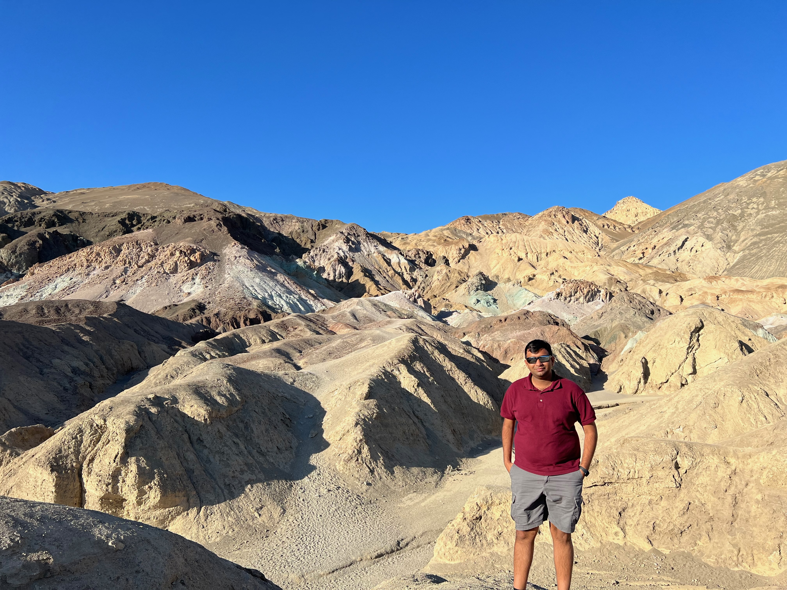

Jeet Dhoriyani

Contact
E-Mail: jd825@cornell.edu
Jeet Dhoriyani
Cornell University
Research Interests
My research interest lie at the intersection of Machine learning and Quantum computing. I am interested in working on use of Hybrid Quantum Classical problems to solve large scale industry problems. I am excited to apply Quantum computing in graph based machine learning problems and networks. I believe there are networks all around us and extracting information from such networks Quantum Algorithms can help us with speed ups in many known problems.
About
I am a second year M.S. Student in Cornell University, fortunate to be part of PEESE Research group.
Prior to joining Cornell, I have worked at Accenture consulting as a Application Analyst. At Accenture, I was introduced to world of CRM software and Software as a Servic(SaaS), I enjoyed my tenure working on cross continental team, designing digital solutions for the client. I obtained my Bachelor's from one of the oldest engineering school of India the L.D. College of Engineering, India..
Education
- 2021-2023, Cornell University, M.S..
- 2020-2021, Accenture Consulting, Application Analyst
- 2016-2020, L.D. College of Engineering, India, B.Eng.
Publications
Here is a link to my Google Scholar.
Teaching
- Harvard AP 275, Spring 2021: Computational Design of Materials (TF)
- MIT 2.086, Spring 2019: Numerical Computation for Mechanical Engineers (TA)
- University of Stuttgart, 2014/2015: Higher Mathematics 1 + 2 (Tutor)